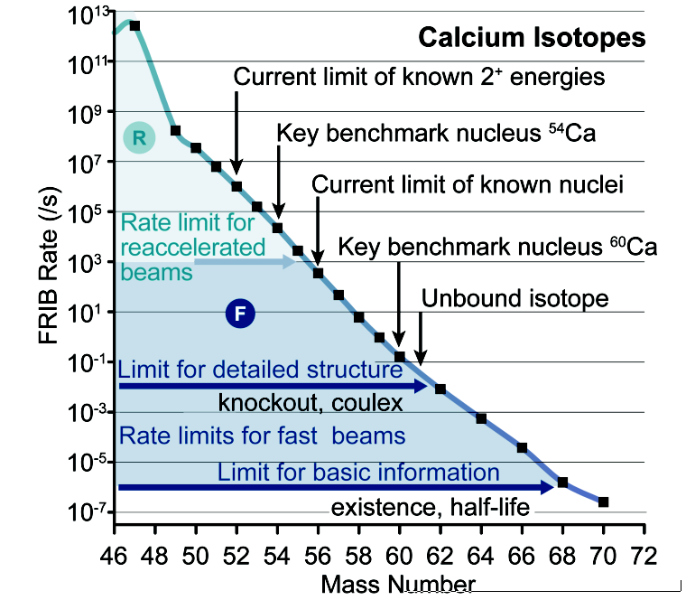
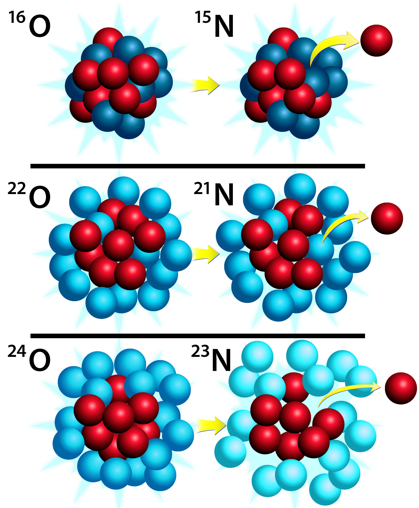
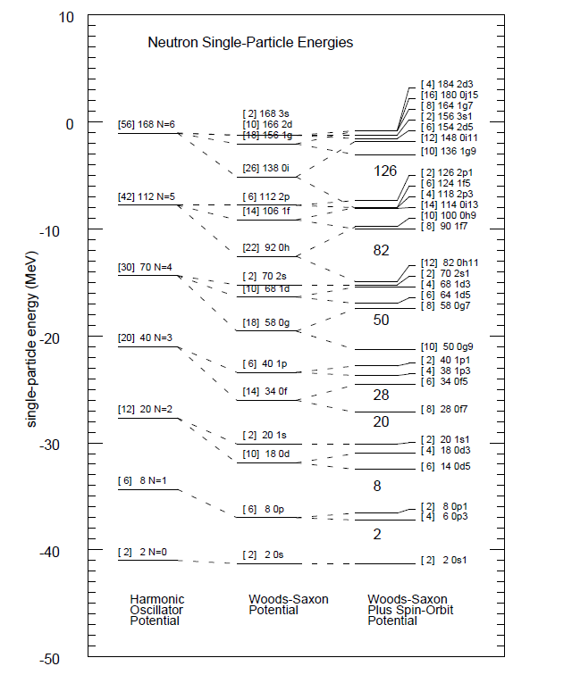
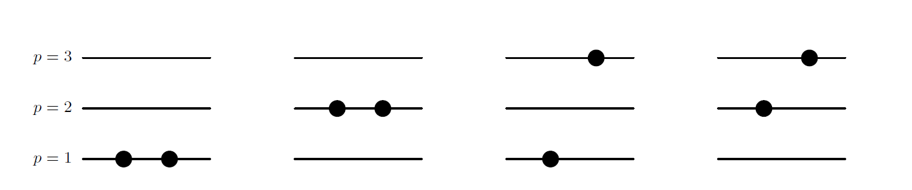

To understand why matter is stable, and thereby shed light on the limits of nuclear stability, is one of the overarching aims and intellectual challenges of basic research in nuclear physics. To relate the stability of matter to the underlying fundamental forces and particles of nature as manifested in nuclear matter, is central to present and planned rare isotope facilities. Important properties of nuclear systems which can reveal information about these topics are for example masses, and thereby binding energies, and density distributions of nuclei. These are quantities which convey important information on the shell structure of nuclei, with their pertinent magic numbers and shell closures or the eventual disappearence of the latter away from the valley of stability.
Neutron-rich nuclei are particularly interesting for the above endeavour. As a particular chain of isotopes becomes more and more neutron rich, one reaches finally the limit of stability, the so-called dripline, where one additional neutron makes the next isotopes unstable with respect to the previous ones. The appearence or not of magic numbers and shell structures, the formation of neutron skins and halos can thence be probed via investigations of quantities like the binding energy or the charge radii and neutron rms radii of neutron-rich nuclei. These quantities have in turn important consequences for theoretical models of nuclear structure and their application in astrophysics. For example, the neutron radius of \( {}^{208}\mbox{Pb} \), recently extracted from the PREX experiment at Jefferson Laboratory can be used to constrain the equation of state of neutron matter. A related quantity to the neutron rms radius \( r_n^{\mathrm{rms}}=\langle r^2\rangle_n^{1/2} \) is the neutron skin \( r_{\mathrm{skin}}=r_n^{\mathrm{rms}}-r_p^{\mathrm{rms}} \), where \( r_p^{\mathrm{rms}} \) is the corresponding proton rms radius. There are several properties which relate the thickness of the neutron skin to quantities in nuclei and nuclear matter, such as the symmetry energy at the saturation point for nuclear matter, the slope of the equation of state for neutron matter or the low-energy electric dipole strength due to the pigmy dipole resonance. See Ref. http://iopscience.iop.org/1402-4896/2013/T152 for several interesting discussions of these topics.
Having access to precise measurements of masses, radii, and electromagnetic moments for a wide range of nuclei allows to study trends with varying neutron excess. A quantitative description of various experimental data with quantified uncertainty still remains a major challenge for nuclear structure theory. Global theoretical studies of isotopic chains, such as the Ca chain shown in the figure below here, make it possible to test systematic properties of effective interactions between nucleons. Such calculations also provide critical tests of limitations of many-body methods. As one approaches the particle emission thresholds, it becomes increasingly important to describe correctly the coupling to the continuum of decays and scattering channels. While the full treatment of antisymmetrization and short-range correlations has become routine in first principle approaches (to be defined later) to nuclear bound states, the many-body problem becomes more difficult when long-range correlations and continuum effects are considered.
Figure 1: Expected experimental information on the calcium isotopes that can be obtained at FRIB. The limits for detailed spectroscopic information are around \( A\sim 60 \).

The aim of this first section is to present some of the experimental data which can be used to extract information about correlations in nuclear systems. In particular, we will start with a theoretical analysis of a quantity called the separation energy for neutrons or protons. This quantity, to be discussed below, is defined as the difference between two binding energies (masses) of neighboring nuclei. As we will see from various figures below and exercises as well, the separation energies display a varying behavior as function of the number of neutrons or protons. These variations from one nucleus to another one, laid the foundation for the introduction of so-called magic numbers and a mean-field picture in order to describe nuclei theoretically.
With a mean- or average-field picture we mean that a given nucleon (either a proton or a neutron) moves in an average potential field which is set up by all other nucleons in the system. Consider for example a nucleus like \( {}^{17}\mbox{O} \) with nine neutrons and eight protons. Many properties of this nucleus can be interpreted in terms of a picture where we can view it as one neutron on top of \( {}^{16}\mbox{O} \). We infer from data and our theoretical interpretations that this additional neutron behaves almost as an individual neutron which sees an average interaction set up by the remaining 16 nucleons in \( {}^{16}\mbox{O} \). A nucleus like \( {}^{16}\mbox{O} \) is an example of what we in this course will denote as a good closed-shell nucleus. We will come back to what this means later.
Since we want to develop a theory capable of interpreting data in terms of our laws of motion and the pertinent forces, we can think of this neutron as a particle which moves in a potential field. We can hence attempt at solving our equations of motion (Schroedinger's equation in our case) for this system along the same lines as we did in atomic physics when we solved Schroedinger's equation for the hydrogen atom. We just need to define a model for our effective single-particle potential.
A simple potential model which enjoys quite some popularity in nuclear physics, is the three-dimensional harmonic oscillator. This potential model captures some of the physics of deeply bound single-particle states but fails in reproducing the less bound single-particle states. A parametrized, and more realistic, potential model which is widely used in nuclear physics, is the so-called Woods-Saxon potential. Both the harmonic oscillator and the Woods-Saxon potential models define computational problems that can easily be solved (see below), resulting (with the appropriate parameters) in a rather good reproduction of experiment for nuclei which can be approximated as one nucleon on top (or one nucleon removed) of a so-called closed-shell system.
To be able to interpret a nucleus in such a way requires at least that we are capable of parametrizing the abovementioned interactions in order to reproduce say the excitation spectrum of a nucleus like \( {}^{17}\mbox{O} \).
With such a parametrized interaction we are able to solve Schroedinger's equation for the motion of one nucleon in a given field. A nucleus is however a true and complicated many-nucleon system, with extremely many degrees of freedom and complicated correlations, rendering the ideal solution of the many-nucleon Schroedinger equation an impossible enterprise. It is much easier to solve a single-particle problem with say a Woods-Saxon potential. Using such a potential hides however many of the complicated correlations and interactions which we see in nuclei. Such an effective single-nucleon potential is for example not capable of describing properties like the binding energy or the rms radius of a given nucleus.
An improvement to these simpler single-nucleon potentials is given by the Hartree-Fock method, where the variational principle is used to define a mean-field which the nucleons move in. There are many different classes of mean-field methods. An important difference between these methods and the simpler parametrized mean-field potentials like the harmonic oscillator and the Woods-Saxon potentials, is that the resulting equations contain information about the nuclear forces present in our models for solving Schroedinger's equation. Hartree-Fock and other mean-field methods like density functional theory form core topics in later lectures.
The aim of this section is to present some of the experimental data we will confront theory with. In particular, we will focus on separation and shell-gap energies and use these to build a picture of nuclei in terms of (from a philosophical stand we would call this a reductionist approach) a single-particle picture. The harmonic oscillator will serve as an excellent starting point in building nuclei from the bottom and up. Here we will neglect nuclear forces, these are introduced in the next section when we discuss the Hartree-Fock method.
The aim of this course is to develop our physics intuition of nuclear systems using a theoretical approach where we describe data in terms of the motion of individual nucleons and their mutual interactions.
How our theoretical pictures and models can be used to interpret data is in essence what this course is about. Our narrative will lead us along a path where we start with single-particle models and end with the theory of the nuclear shell-model. The latter will be used to understand and analyze excitation spectra and decay patterns of nuclei, linking our theoretical understanding with interpretations of experiment. The way we build up our theoretical descriptions and interpretations follows what we may call a standard reductionistic approach, that is we start with what we believe are our effective degrees of freedom (nucleons in our case) and interactions amongst these and solve thereafter the underlying equations of motions. This defines the nuclear many-body problem, and mean-field approaches like Hartree-Fock theory and the nuclear shell-model represent different approaches to our solutions of Schroedinger's equation.
We start our tour of experimental data and our interpretations by considering the chain of oxygen isotopes. In the exercises below you will be asked to perform similar analyses for other chains of isotopes.
The oxygen isotopes are the heaviest isotopes for which the drip line is well established. The drip line is defined as the point where adding one more nucleon leads to an unbound nucleus. Below we will see that we can define the dripline by studying the separation energy. Where the neutron (proton) separation energy changes sign as a function of the number of neutrons (protons) defines the neutron (proton) drip line.
The oxygen isotopes are simple enough to be described by some few selected single-particle degrees of freedom.
These isotopes have been studied in series of recent experiments. Some of these experiments and theoretical interpretations are discussed in the following articles:
Our first approach in analyzing data theoretically, is to see if we can use experimental information to
The next step is to see if we could use these interpretations to say something about shell closures and magic numbers. Since we focus on single-particle properties, a quantity we can extract from experiment is the separation energy for protons and neutrons. Before we proceed, we need to define quantities like masses and binding energies. Two excellent reviews on recent trends in the determination of nuclear masses can be found in http://journals.aps.org/rmp/abstract/10.1103/RevModPhys.75.1021 and in http://iopscience.iop.org/1402-4896/2013/T152/014017/
A basic quantity which can be measured for the ground states of nuclei is the atomic mass \( M(N, Z) \) of the neutral atom with atomic mass number \( A \) and charge \( Z \). The number of neutrons is \( N \).
Atomic masses are usually tabulated in terms of the mass excess defined by
$$
\Delta M(N, Z) = M(N, Z) - uA,
$$
where \( u \) is the Atomic Mass Unit
$$
u = M(^{12}\mathrm{C})/12 = 931.49386 \hspace{0.1cm} \mathrm{MeV}/c^2.
$$
In this course we will mainly use
data from the 2003 compilation of Audi, Wapstra and Thibault, see http://www.sciencedirect.com/science/journal/03759474/729/1.
The nucleon masses are
$$
m_p = 938.27203(8)\hspace{0.1cm} \mathrm{MeV}/c^2 = 1.00727646688(13)u,
$$
and
$$
m_n = 939.56536(8)\hspace{0.1cm} \mathrm{MeV}/c^2 = 1.0086649156(6)u.
$$
In the 2003 mass evaluation there are 2127 nuclei measured with an accuracy of 0.2 MeV or better, and 101 nuclei measured with an accuracy of greater than 0.2 MeV. For heavy nuclei one observes several chains of nuclei with a constant \( N-Z \) value whose masses are obtained from the energy released in \( \alpha \)-decay.
The nuclear binding energy is defined as the energy required to break up a given nucleus into its constituent parts of \( N \) neutrons and \( Z \) protons. In terms of the atomic masses \( M(N, Z) \) the binding energy is defined by
$$
BE(N, Z) = ZM_H c^2 + Nm_n c^2 - M(N, Z)c^2 ,
$$
where \( M_H \) is the mass of the hydrogen atom and \( m_n \) is the mass of the neutron.
In terms of the mass excess the binding energy is given by
$$
BE(N, Z) = Z\Delta_H c^2 + N\Delta_n c^2 -\Delta(N, Z)c^2 ,
$$
where \( \Delta_H c^2 = 7.2890 \) MeV and \( \Delta_n c^2 = 8.0713 \) MeV.
The following python program reads in the experimental data on binding energies and, stored in the file bindingenergies.dat, plots them as function of the mass number \( A \). One notices clearly a saturation of the binding energy per nucleon at \( A\approx 56 \).
import numpy as np
from matplotlib import pyplot as plt
# Load in data file
data = np.loadtxt("datafiles/bindingenergies.dat")
# Make arrays containing x-axis and binding energies as function of A
x = data[:,2]
bexpt = data[:,3]
plt.plot(x, bexpt ,'ro')
plt.axis([0,270,-1, 10.0])
plt.xlabel(r'$A$')
plt.ylabel(r'Binding energies in [MeV]')
plt.legend(('Experiment'), loc='upper right')
plt.title(r'Binding energies from experiment')
plt.savefig('expbindingenergies.pdf')
plt.savefig('expbindingenergies.png')
plt.show()
A popular and physically intuitive model which can be used to parametrize the experimental binding energies as function of \( A \), is the so-called the liquid drop model. The ansatz is based on the following expression
$$
BE(N,Z) = a_1A-a_2A^{2/3}-a_3\frac{Z^2}{A^{1/3}}-a_4\frac{(N-Z)^2}{A},
$$
where \( A \) stands for the number of nucleons and the $a_i$s are parameters which are determined by a fit
to the experimental data.
To arrive at the above expression we have assumed that we can make the following assumptions:
We could also add a so-called pairing term, which is a correction term that arises from the tendency of proton pairs and neutron pairs to occur. An even number of particles is more stable than an odd number. Performing a least-square fit to data, we obtain the following numerical values for the various constants
The python below here allows you to perform a fit of teh above parameters using nonlinear least squares curvefitting.
The following python program reads now in the experimental data on binding energies as well as the results from the above liquid drop model and plots these energies as function of the mass number \( A \). One sees that for larger values of \( A \), there is a better agreement with data.
import numpy as np
from matplotlib import pyplot as plt
# Load in data file
data = np.loadtxt("datafiles/bindingenergies.dat")
# Make arrays containing x-axis and binding energies as function of
x = data[:,2]
bexpt = data[:,3]
liquiddrop = data[:,4]
plt.plot(x, bexpt ,'b-o', x, liquiddrop, 'r-o')
plt.axis([0,270,-1, 10.0])
plt.xlabel(r'$A$')
plt.ylabel(r'Binding energies in [MeV]')
plt.legend(('Experiment','Liquid Drop'), loc='upper right')
plt.title(r'Binding energies from experiment and liquid drop')
plt.savefig('bindingenergies.pdf')
plt.savefig('bindingenergies.png')
plt.show()
This python program reads now in the experimental data on binding energies and performs a nonlinear least square fitting of the data. In the example here we use only the parameters \( a_1 \) and \( a_2 \), leaving it as an exercise to the reader to perform the fit for all four paramters. The results are plotted and compared with the experimental values. To read more about non-linear least square methods, see for example the text of M.J. Box, D. Davies and W.H. Swann, Non-Linear optimisation Techniques, Oliver & Boyd, 1969.
import numpy as np
from scipy.optimize import curve_fit
from matplotlib import pyplot as plt
# Load in data file
data = np.loadtxt("datafiles/bindingenergies.dat")
# Make arrays containing A on x-axis and binding energies
A = data[:,2]
bexpt = data[:,3]
# The function we want to fit to, only two terms here
def func(A,a1, a2):
return a1*A-a2*(A**(2.0/3.0))
# function to perform nonlinear least square with guess for a1 and a2
popt, pcov = curve_fit(func, A, bexpt, p0 = (16.0, 18.0))
a1 = popt[0]
a2 = popt[1]
liquiddrop = a1*A-a2*(A**(2.0/3.0))
plt.plot(A, bexpt ,'bo', A, liquiddrop, 'ro')
plt.axis([0,270,-1, 10.0])
plt.xlabel(r'$A$')
plt.ylabel(r'Binding energies in [MeV]')
plt.legend(('Experiment','Liquid Drop'), loc='upper right')
plt.title(r'Binding energies from experiment and liquid drop')
plt.savefig('bindingenergies.pdf')
plt.savefig('bindingenergies.png')
plt.show()
We are now interested in interpreting experimental binding energies in terms of a single-particle picture. In order to do so, we consider first energy conservation for nuclear transformations that include, for example, the fusion of two nuclei \( a \) and \( b \) into the combined system \( c \)
$$
{^{N_a+Z_a}}a+ {^{N_b+Z_b}}b\rightarrow {^{N_c+Z_c}}c
$$
or the decay of nucleus \( c \) into two other nuclei \( a \) and \( b \)
$$
^{N_c+Z_c}c \rightarrow ^{N_a+Z_a}a+ ^{N_b+Z_b}b
$$
In general we have the reactions
$$
\sum_i {^{N_i+Z_i}}i \rightarrow \sum_f {^{N_f+Z_f}}f
$$
We require also that the number of protons and neutrons (the total number of nucleons) is conserved in the initial stage and final stage, unless we have processes which violate baryon conservation,
$$
\sum_iN_i = \sum_f N_f \hspace{0.2cm}\mathrm{and} \hspace{0.2cm}\sum_iZ_i = \sum_f Z_f.
$$
Artist's rendition of the emission of one proton from various oxygen isotopes. Protons are in red while neutrons are in blue. These processes could be interpreted as the decay nucleus \( c \) into two other nuclei \( a \) and \( b \)
$$
^{N_c+Z_c}c \rightarrow ^{N_a+Z_a}a+ ^{N_b+Z_b}b .
$$
Figure 2: Artist's rendition of the emission of one proton from various oxygen isotopes.

The above processes can be characterized by an energy difference called the \( Q \) value, defined as
$$
Q=\sum_i M(N_i, Z_i)c^2-\sum_f M(N_f, Z_f)c^2=\sum_i BE(N_f, Z_f)-\sum_i BE(N_i, Z_i)
$$
Spontaneous decay involves a single initial nuclear state and is allowed if \( Q > 0 \). In the decay, energy is released in the form of the kinetic energy of the final products. Reactions involving two initial nuclei are called endothermic (a net loss of energy) if \( Q < 0 \). The reactions are exothermic (a net release of energy) if \( Q > 0 \).
Let us study the Q values associated with the removal of one or two nucleons from a nucleus. These are conventionally defined in terms of the one-nucleon and two-nucleon separation energies. The neutron separation energy is defined as
$$
S_n= -Q_n= BE(N,Z)-BE(N-1,Z),
$$
and the proton separation energy reads
$$
S_p= -Q_p= BE(N,Z)-BE(N,Z-1).
$$
The two-neutron separation energy is defined as
$$
S_{2n}= -Q_{2n}= BE(N,Z)-BE(N-2,Z),
$$
and the two-proton separation energy is given by
$$
S_{2p}= -Q_{2p}= BE(N,Z)-BE(N,Z-2),
$$
Using say the neutron separation energies (alternatively the proton separation energies)
$$
S_n= -Q_n= BE(N,Z)-BE(N-1,Z),
$$
we can define the so-called energy gap for neutrons (or protons) as
$$
\Delta S_n= BE(N,Z)-BE(N-1,Z)-\left(BE(N+1,Z)-BE(N,Z)\right),
$$
or
$$
\Delta S_n= 2BE(N,Z)-BE(N-1,Z)-BE(N+1,Z).
$$
This quantity can in turn be used to determine which nuclei are magic or not.
For protons we would have
$$
\Delta S_p= 2BE(N,Z)-BE(N,Z-1)-BE(N,Z+1).
$$
We leave it as an exercise to the reader to define and interpret the two-neutron or two-proton gaps.
The following python programs can now be used to plot the separation energies and the energy gaps for the oxygen isotopes. The following python code reads the separation energies from file for all oxygen isotopes from \( A=13 \) to \( A=25 \), The data are taken from the file snox.dat. This files contains the separation energies and the shell gap energies.
import numpy as np
from matplotlib import pyplot as plt
# Load in data file
data = np.loadtxt("datafiles/snox.dat")
# Make arrays containing x-axis and binding energies as function of
x = data[:,1]
y = data[:,2]
plt.plot(x, y,'b-+',markersize=6)
plt.axis([4,18,-1, 25.0])
plt.xlabel(r'Number of neutrons $N$',fontsize=20)
plt.ylabel(r'$S_n$ [MeV]',fontsize=20)
plt.legend(('Separation energies for oxygen isotpes'), loc='upper right')
plt.title(r'Separation energy for the oxygen isotopes')
plt.savefig('snoxygen.pdf')
plt.savefig('snoxygen.png')
plt.show()
Here we display the python program for plotting the corresponding results for shell gaps for the oyxgen isotopes.
import numpy as np
from matplotlib import pyplot as plt
# Load in data file
data = np.loadtxt("datafiles/snox.dat")
# Make arrays containing x-axis and binding energies as function of
x = data[:,1]
y = data[:,3]
plt.plot(x, y,'b-+',markersize=6)
plt.axis([4,18,-7, 12.0])
plt.xlabel(r'Number of neutrons $N$',fontsize=20)
plt.ylabel(r'$\Delta S_n$ [MeV]',fontsize=20)
plt.legend(('Shell gap energies for oxygen isotpes'), loc='upper right')
plt.title(r'Shell gap energies for the oxygen isotopes')
plt.savefig('gapoxygen.pdf')
plt.savefig('gapoxygen.png')
plt.show()
Since we will focus in the beginning on single-particle degrees of freedom and mean-field approaches before we start with nuclear forces and many-body approaches like the nuclear shell-model, there are some features to be noted
One may thus infer that intrinsic properties of nucleons in a nucleus are close to those of free nucleons.
In the exercises below you will be asked to perform a similar analysis for other chains of isotopes and interpret the results.
The root-mean-square (rms) charge radius has been measured for the ground states of many nuclei. For a spherical charge density, \( \rho(\boldsymbol{r}) \), the mean-square radius is defined by
$$
\langle r^2\rangle = \frac{ \int d \boldsymbol{r} \rho(\boldsymbol{r}) r^2}{ \int d \boldsymbol{r} \rho(\boldsymbol{r})},
$$
and the rms radius is the square root of this quantity denoted by
$$
R =\sqrt{ \langle r^2\rangle}.
$$
Radii for most stable nuclei have been deduced from electron scattering form factors and/or from the x-ray transition energies of muonic atoms. The relative radii for a series of isotopes can be extracted from the isotope shifts of atomic x-ray transitions. The rms radius for the nuclear point-proton density, \( R_p \) is obtained from the rms charge radius by:
$$
R_p = \sqrt{R^2_{\mathrm{ch}}- R^2_{\mathrm{corr}}},
$$
where
$$
R^2_{\mathrm{corr}}= R^2_{\mathrm{op}}+(N/Z)R^2_{\mathrm{on}}+R^2_{\mathrm{rel}},
$$
where
$$
R_{\mathrm{op}}= 0.875(7) \mathrm{fm}.
$$
is the rms radius of the proton, \( R^2_{\mathrm{on}} = 0.116(2) \) $\mbox{fm}^{2}$ is the
mean-square radius of the neutron and \( R^2_{\mathrm{rel}} = 0.033 \) $\mbox{fm}^{2}$ is the relativistic Darwin-Foldy correction. There are also smaller nucleus-dependent relativistic spin-orbit and
mesonic-exchange corrections that should be included.
We will now introduce the potential models we have discussex above, namely the harmonic oscillator and the Woods-Saxon potentials. In order to proceed, we need some definitions.
We define an operator as \( \hat{O} \) throughout. Unless otherwise specified the total number of nucleons is always \( A \) and \( d \) is the dimension of the system. In nuclear physics we normally define the total number of particles to be \( A=N+Z \), where \( N \) is total number of neutrons and \( Z \) the total number of protons. In case of other baryons such as isobars \( \Delta \) or various hyperons such as \( \Lambda \) or \( \Sigma \), one needs to add their definitions. When we refer to a single neutron we will use the label \( n \) and when we refer to a single proton we will use the label \( p \). Unless otherwise specified, we will simply call these particles for nucleons.
The quantum numbers of a single-particle state in coordinate space are defined by the variables
$$
x=(\boldsymbol{r},\sigma),
$$
where
$$
\boldsymbol{r}\in {\mathbb{R}}^{d},
$$
with \( d=1,2,3 \) represents the spatial coordinates and \( \sigma \) is the eigenspin of the particle. For fermions with eigenspin \( 1/2 \) this means that
$$
x\in {\mathbb{R}}^{d}\oplus (\frac{1}{2}),
$$
and the integral
$$
\int dx = \sum_{\sigma}\int d^dr = \sum_{\sigma}\int d\boldsymbol{r},
$$
and
$$
\int d^Ax= \int dx_1\int dx_2\dots\int dx_A.
$$
Since we are dealing with protons and neutrons we need to add isospin as a new degree of freedom.
Including isospin \( \tau \) we have
$$
x=(\boldsymbol{r},\sigma,\tau),
$$
where
$$
\boldsymbol{r}\in {\mathbb{R}}^{3},
$$
For nucleons, which are fermions with eigenspin \( 1/2 \) and isospin \( 1/2 \) this means that
$$
x\in {\mathbb{R}}^{d}\oplus (\frac{1}{2})\oplus (\frac{1}{2}),
$$
and the integral
$$
\int dx = \sum_{\sigma\tau}\int d\boldsymbol{r},
$$
and
$$
\int d^Ax= \int dx_1\int dx_2\dots\int dx_A.
$$
We will use the standard nuclear physics definition of isospin, resulting in \( \tau_z=-1/2 \) for protons and \( \tau_z=1/2 \) for neutrons.
The quantum mechanical wave function of a given state with quantum numbers \( \lambda \) (encompassing all quantum numbers needed to specify the system), ignoring time, is
$$
\Psi_{\lambda}=\Psi_{\lambda}(x_1,x_2,\dots,x_A),
$$
with \( x_i=(\boldsymbol{r}_i,\sigma_i,\tau_i) \) and the projections of \( \sigma_i \) and \( \tau_i \) take the values
\( \{-1/2,+1/2\} \).
We will hereafter always refer to \( \Psi_{\lambda} \) as the exact wave function, and if the ground state is not degenerate we label it as
$$
\Psi_0=\Psi_0(x_1,x_2,\dots,x_A).
$$
Since the solution \( \Psi_{\lambda} \) seldomly can be found in closed form, approximations are sought. In this text we define an approximative wave function or an ansatz to the exact wave function as
$$
\Phi_{\lambda}=\Phi_{\lambda}(x_1,x_2,\dots,x_A),
$$
with
$$
\Phi_{0}=\Phi_{0}(x_{1},x_{2},\dots,x_{A}),
$$
being the ansatz for the ground state.
The wave function \( \Psi_{\lambda} \) is sought in the Hilbert space of either symmetric or anti-symmetric \( N \)-body functions, namely
$$
\Psi_{\lambda}\in {\cal H}_A:= {\cal H}_1\oplus{\cal H}_1\oplus\dots\oplus{\cal H}_1,
$$
where the single-particle Hilbert space \( \hat{H}_1 \) is the space of square integrable functions over \( \in {\mathbb{R}}^{d}\oplus (\sigma)\oplus (\tau) \) resulting in
$$
{\cal H}_1:= L^2(\mathbb{R}^{d}\oplus (\sigma)\oplus (\tau)).
$$
Our Hamiltonian is invariant under the permutation (interchange) of two particles. Since we deal with fermions however, the total wave function is antisymmetric. Let \( \hat{P} \) be an operator which interchanges two particles. Due to the symmetries we have ascribed to our Hamiltonian, this operator commutes with the total Hamiltonian,
$$
[\hat{H},\hat{P}] = 0,
$$
meaning that \( \Psi_{\lambda}(x_1, x_2, \dots , x_A) \) is an eigenfunction of
\( \hat{P} \) as well, that is
$$
\hat{P}_{ij}\Psi_{\lambda}(x_1, x_2, \dots,x_i,\dots,x_j,\dots,x_A)=
\beta\Psi_{\lambda}(x_1, x_2, \dots,x_j,\dots,x_i,\dots,x_A),
$$
where \( \beta \) is the eigenvalue of \( \hat{P} \). We have introduced the suffix \( ij \) in order to indicate that we permute particles \( i \) and \( j \).
The Pauli principle tells us that the total wave function for a system of fermions
has to be antisymmetric, resulting in the eigenvalue \( \beta = -1 \).
The Schrodinger equation reads
$$
\begin{equation}
\hat{H}(x_1, x_2, \dots , x_A) \Psi_{\lambda}(x_1, x_2, \dots , x_A) =
E_\lambda \Psi_\lambda(x_1, x_2, \dots , x_A), \tag{1}
\end{equation}
$$
where the vector \( x_i \) represents the coordinates (spatial, spin and isospin) of particle \( i \), \( \lambda \) stands for all the quantum
numbers needed to classify a given \( A \)-particle state and \( \Psi_{\lambda} \) is the pertaining eigenfunction. Throughout this course,
\( \Psi \) refers to the exact eigenfunction, unless otherwise stated.
We write the Hamilton operator, or Hamiltonian, in a generic way
$$
\hat{H} = \hat{T} + \hat{V}
$$
where \( \hat{T} \) represents the kinetic energy of the system
$$
\hat{T} = \sum_{i=1}^A \frac{\mathbf{p}_i^2}{2m_i} = \sum_{i=1}^A \left( -\frac{\hbar^2}{2m_i} \mathbf{\nabla_i}^2 \right) =
\sum_{i=1}^A t(x_i)
$$
while the operator \( \hat{V} \) for the potential energy is given by
$$
\begin{equation}
\hat{V} = \sum_{i=1}^A \hat{u}_{\mathrm{ext}}(x_i) + \sum_{ji=1}^A v(x_i,x_j)+\sum_{ijk=1}^Av(x_i,x_j,x_k)+\dots
\tag{2}
\end{equation}
$$
Hereafter we use natural units, viz. \( \hbar=c=e=1 \), with \( e \) the elementary charge and \( c \) the speed of light. This means that momenta and masses
have dimension energy.
The potential energy part includes also an external potential \( \hat{u}_{\mathrm{ext}}(x_i) \).
In a non-relativistic approach to atomic physics, this external potential is given by the attraction an electron feels from the atomic nucleus. The latter being much heavier than the involved electrons, is often used to define a natural center of mass. In nuclear physics there is no such external potential. It is the nuclear force which results in binding in nuclear systems. In a non-relativistic framework, the nuclear force contains two-body, three-body and more complicated degrees of freedom. The potential energy reads then
$$
\hat{V} = \sum_{ij}^A v(x_i,x_j)+\sum_{ijk}^Av(x_i,x_j,x_k)+\dots
$$
Three-body and more complicated forces arise since we are dealing with protons and neutrons as effective degrees of freedom. We will come back to this topic later. Furthermore, in large parts of these lectures we will assume that the potential energy can be approximated by a two-body interaction only. Our Hamiltonian reads then
$$
\begin{equation}
\hat{H} = \sum_{i=1}^A \frac{\mathbf{p}_i^2}{2m_i}+\sum_{ij}^A v(x_i,x_j).
\tag{3}
\end{equation}
$$
It is however, from a computational point of view, convenient to introduce an external potential \( \hat{u}_{\mathrm{ext}}(x_i) \) by adding and substracting it to the original Hamiltonian. This means that our Hamiltonian can be rewritten as
$$
\hat{H} = \hat{H}_0 + \hat{H}_I
= \sum_{i=1}^A \hat{h}_0(x_i) + \sum_{i < j=1}^A \hat{v}(x_{ij})-\sum_{i=1}^A\hat{u}_{\mathrm{ext}}(x_i),
$$
with
$$
\hat{H}_0=\sum_{i=1}^A \hat{h}_0(x_i) = \sum_{i=1}^A\left(\hat{t}(x_i) + \hat{u}_{\mathrm{ext}}(x_i)\right).
$$
The interaction (or potential energy term) reads now
$$
\hat{H}_I= \sum_{i < j=1}^A \hat{v}(x_{ij})-\sum_{i=1}^A\hat{u}_{\mathrm{ext}}(x_i).
$$
In nuclear physics the one-body part \( u_{\mathrm{ext}}(x_i) \) is often approximated by a harmonic oscillator potential or a Woods-Saxon potential. However, this is not fully correct, because as we have discussed, nuclei are self-bound systems and there is no external confining potential. As we will see later, the \( \hat{H}_0 \) part of the hamiltonian cannot be used to compute the binding energy of a nucleus since it is not based on a model for the nuclear forces. That is, the binding energy is not the sum of the individual single-particle energies.
Why do we introduce the Hamiltonian in the form
$$
\hat{H} = \hat{H}_0 + \hat{H}_I?
$$
There are many reasons for this. Let us look at some of them, using the harmonic oscillator in three dimensions as our starting point. For the harmonic oscillator we know that
$$
\hat{h}_0(x_i)\psi_{\alpha}(x_i)=\varepsilon_{\alpha}\psi_{\alpha}(x_i),
$$
where the eigenvalues are \( \varepsilon_{\alpha} \) and the eigenfunctions are \( \psi_{\alpha}(x_i) \). The subscript \( \alpha \) represents quantum numbers like the orbital angular momentum \( l_{\alpha} \), its projection \( m_{l_{\alpha}} \) and the principal quantum number \( n_{\alpha}=0,1,2,\dots \).
The eigenvalues are
$$
\varepsilon_{\alpha} = \hbar\omega \left(2n_{\alpha}+l_{\alpha}+\frac{3}{2}\right).
$$
The following mathematical properties of the harmonic oscillator are handy.
$$
\phi_{\tau}(x_i)=\sum_{\alpha} C_{\tau\alpha}\psi_{\alpha}(x_i),
$$
where \( C_{\tau\alpha} \) represents the overlap between the two basis sets.
The harmonic oscillator (a shifted one by a negative constant) provides also a very good approximation to most bound single-particle states. Furthermore, it serves as a starting point in building up our picture of nuclei, in particular how we define magic numbers and systems with one nucleon added to (or removed from) a closed-shell core nucleus. The figure here shows the various harmonic oscillator states, with those obtained with a Woods-Saxon potential as well, including a spin-orbit splitting (to be discussed below).
Figure 3: Single-particle spectrum and quantum numbers for a harmonic oscillator potential and a Woods-Saxon potential with and without a spin-orbit force.

In nuclear physics the one-body part \( u_{\mathrm{ext}}(x_i) \) is often approximated by a harmonic oscillator potential. However, as we also noted with the Woods-Saxon potential there is no external confining potential in nuclei.
What many people do then, is to add and subtract a harmonic oscillator potential, with
$$
\hat{u}_{\mathrm{ext}}(x_i)=\hat{u}_{\mathrm{ho}}(x_i)= \frac{1}{2}m\omega^2 r_i^2,
$$
where \( \omega \) is the oscillator frequency. This leads to
$$
\hat{H} = \hat{H_0} + \hat{H_I}
= \sum_{i=1}^A \hat{h}_0(x_i) + \sum_{i < j=1}^A \hat{v}(x_{ij})-\sum_{i=1}^A\hat{u}_{\mathrm{ho}}(x_i),
$$
with
$$
H_0=\sum_{i=1}^A \hat{h}_0(x_i) = \sum_{i=1}^A\left(\hat{t}(x_i) + \hat{u}_{\mathrm{ho}}(x_i)\right).
$$
Many practitioners use this as the standard Hamiltonian when doing nuclear structure calculations.
This is ok if the number of nucleons is large, but still with this Hamiltonian, we do not obey translational invariance. How can we cure this?
In setting up a translationally invariant Hamiltonian the following expressions are helpful. The center-of-mass (CoM) momentum is
$$
P=\sum_{i=1}^A\boldsymbol{p}_i,
$$
and we have that
$$
\sum_{i=1}^A\boldsymbol{p}_i^2 =
\frac{1}{A}\left[\boldsymbol{P}^2+\sum_{i < j}(\boldsymbol{p}_i-\boldsymbol{p}_j)^2\right]
$$
meaning that
$$
\left[\sum_{i=1}^A\frac{\boldsymbol{p}_i^2}{2m} -\frac{\boldsymbol{P}^2}{2mA}\right]
=\frac{1}{2mA}\sum_{i < j}(\boldsymbol{p}_i-\boldsymbol{p}_j)^2.
$$
In a similar fashion we can define the CoM coordinate
$$
\boldsymbol{R}=\frac{1}{A}\sum_{i=1}^{A}\boldsymbol{r}_i,
$$
which yields
$$
\sum_{i=1}^A\boldsymbol{r}_i^2 =
\frac{1}{A}\left[A^2\boldsymbol{R}^2+\sum_{i < j}(\boldsymbol{r}_i-\boldsymbol{r}_j)^2\right].
$$
If we then introduce the harmonic oscillator one-body Hamiltonian
$$
H_0= \sum_{i=1}^A\left(\frac{\boldsymbol{p}_i^2}{2m}+
\frac{1}{2}m\omega^2\boldsymbol{r}_i^2\right),
$$
with \( \omega \) the oscillator frequency,
we can rewrite the latter as
$$
H_{\mathrm{HO}}= \frac{\boldsymbol{P}^2}{2mA}+\frac{mA\omega^2\boldsymbol{R}^2}{2}
+\frac{1}{2mA}\sum_{i < j}(\boldsymbol{p}_i-\boldsymbol{p}_j)^2
+\frac{m\omega^2}{2A}\sum_{i < j}(\boldsymbol{r}_i-\boldsymbol{r}_j)^2.
\tag{4}
$$
Alternatively, we could write it as
$$
H_{\mathrm{HO}}= H_{\mathrm{CoM}}+\frac{1}{2mA}\sum_{i < j}(\boldsymbol{p}_i-\boldsymbol{p}_j)^2
+\frac{m\omega^2}{2A}\sum_{i < j}(\boldsymbol{r}_i-\boldsymbol{r}_j)^2,
$$
The center-of-mass term is defined as
$$
H_{\mathrm{CoM}}= \frac{\boldsymbol{P}^2}{2mA}+\frac{mA\omega^2\boldsymbol{R}^2}{2}.
$$
The translationally invariant one- and two-body Hamiltonian reads for an A-nucleon system,
$$
\tag{5}
\hat{H}=\left[\sum_{i=1}^A\frac{\boldsymbol{p}_i^2}{2m} -\frac{\boldsymbol{P}^2}{2mA}\right] +\sum_{i < j}^A V_{ij} \; ,
$$
where \( V_{ij} \) is the nucleon-nucleon interaction. Adding zero as here
$$
\sum_{i=1}^A\frac{1}{2}m\omega^2\boldsymbol{r}_i^2-
\frac{m\omega^2}{2A}\left[\boldsymbol{R}^2+\sum_{i < j}(\boldsymbol{r}_i-\boldsymbol{r}_j)^2\right]=0.
$$
we can then rewrite the Hamiltonian as
$$
\hat{H}=\sum_{i=1}^A \left[ \frac{\boldsymbol{p}_i^2}{2m}
+\frac{1}{2}m\omega^2 \boldsymbol{r}^2_i
\right] + \sum_{i < j}^A \left[ V_{ij}-\frac{m\omega^2}{2A}
(\boldsymbol{r}_i-\boldsymbol{r}_j)^2
\right]-H_{\mathrm{CoM}}.
$$
The Woods-Saxon potential is a mean field potential for the nucleons (protons and neutrons) inside an atomic nucleus. It represent an average potential that a given nucleon feels from the forces applied on each nucleon. The parametrization is
$$
\hat{u}_{\mathrm{ext}}(r)=-\frac{V_0}{1+\exp{(r-R)/a}},
$$
with \( V_0\approx 50 \) MeV representing the potential well depth, \( a\approx 0.5 \) fm
length representing the "surface thickness" of the nucleus and \( R=r_0A^{1/3} \), with \( r_0=1.25 \) fm and \( A \) the number of nucleons.
The value for \( r_0 \) can be extracted from a fit to data, see for example M. Kirson, http://www.sciencedirect.com/science/article/pii/S037594740600769X.
The following python code produces a plot of the Woods-Saxon potential with the above parameters.
import numpy as np
from matplotlib import pyplot as plt
from matplotlib import rc, rcParams
import matplotlib.units as units
import matplotlib.ticker as ticker
rc('text',usetex=True)
rc('font',**{'family':'serif','serif':['Woods-Saxon potential']})
font = {'family' : 'serif',
'color' : 'darkred',
'weight' : 'normal',
'size' : 16,
}
v0 = 50
A = 100
a = 0.5
r0 = 1.25
R = r0*A**(0.3333)
x = np.linspace(0.0, 10.0)
y = -v0/(1+np.exp((x-R)/a))
plt.plot(x, y, 'b-')
plt.title(r'{\bf Woods-Saxon potential}', fontsize=20)
plt.text(3, -40, r'Parameters: $A=20$, $V_0=50$ [MeV]', fontdict=font)
plt.text(3, -44, r'$a=0.5$ [fm], $r_0=1.25$ [fm]', fontdict=font)
plt.xlabel(r'$r$ [fm]',fontsize=20)
plt.ylabel(r'$V(r)$ [MeV]',fontsize=20)
# Tweak spacing to prevent clipping of ylabel
plt.subplots_adjust(left=0.15)
plt.savefig('woodsaxon.pdf', format='pdf')
From the plot we notice that the potential
We have introduced a single-particle Hamiltonian
$$
H_0=\sum_{i=1}^A \hat{h}_0(x_i) = \sum_{i=1}^A\left(\hat{t}(x_i) + \hat{u}_{\mathrm{ext}}(x_i)\right),
$$
with an external and central symmetric potential \( u_{\mathrm{ext}}(x_i) \), which is often
approximated by a harmonic oscillator potential or a Woods-Saxon potential. Being central symmetric leads to a degeneracy
in energy which is not observed experimentally. We see this from for example our discussion of separation energies and magic numbers. There are, in addition to the assumed magic numbers from a harmonic oscillator basis of \( 2,8,20,40,70\dots \) magic numbers like \( 28 \), \( 50 \), \( 82 \) and \( 126 \).
To produce these additional numbers, we need to add a phenomenological spin-orbit force which lifts the degeneracy, that is
$$
\hat{h}(x_i) = \hat{t}(x_i) + \hat{u}_{\mathrm{ext}}(x_i) +\xi(\boldsymbol{r})\boldsymbol{ls}=\hat{h}_0(x_i)+\xi(\boldsymbol{r})\boldsymbol{ls}.
$$
We have introduced a modified single-particle Hamiltonian
$$
\hat{h}(x_i) = \hat{t}(x_i) + \hat{u}_{\mathrm{ext}}(x_i) +\xi(\boldsymbol{r})\boldsymbol{ls}=\hat{h}_0(x_i)+\xi(\boldsymbol{r})\boldsymbol{ls}.
$$
We can calculate the expectation value of the latter using the fact that
$$
\xi(\boldsymbol{r})\boldsymbol{ls}=\frac{1}{2}\xi(\boldsymbol{r})\left(\boldsymbol{j}^2-\boldsymbol{l}^2-\boldsymbol{s}^2\right).
$$
For a single-particle state with quantum numbers \( nlj \) (we suppress \( s \) and \( m_j \)), with \( s=1/2 \), we obtain the single-particle energies
$$
\varepsilon_{nlj} = \varepsilon_{nlj}^{(0)}+\Delta\varepsilon_{nlj},
$$
with \( \varepsilon_{nlj}^{(0)} \) being the single-particle energy obtained with \( \hat{h}_0(x) \) and
$$
\Delta\varepsilon_{nlj}=\frac{C}{2}\left(j(j+1)-l(l+1)-\frac{3}{4}\right).
$$
The spin-orbit force gives thus an additional contribution to the energy
$$
\Delta\varepsilon_{nlj}=\frac{C}{2}\left(j(j+1)-l(l+1)-\frac{3}{4}\right),
$$
which lifts the degeneracy we have seen before in the harmonic oscillator or Woods-Saxon potentials. The value \( C \) is the radial
integral involving \( \xi(\boldsymbol{r}) \). Depending on the value of \( j=l\pm 1/2 \), we obtain
$$
\Delta\varepsilon_{nlj=l-1/2}=\frac{C}{2}l,
$$
or
$$
\Delta\varepsilon_{nlj=l+1/2}=-\frac{C}{2}(l+1),
$$
clearly lifting the degeneracy. Note well that till now we have simply postulated the spin-orbit force in ad hoc way.
Later, we will see how this term arises from the two-nucleon force in a natural way.
With the spin-orbit force, we can modify our Woods-Saxon potential to
$$
\hat{u}_{\mathrm{ext}}(r)=-\frac{V_0}{1+\exp{(r-R)/a}}+V_{so}(r)\boldsymbol{ls},
$$
with
$$
V_{so}(r) = V_{so}\frac{1}{r}\frac{d f_{so}(r)}{dr},
$$
where we have
$$
f_{so}(r) = \frac{1}{1+\exp{(r-R_{so})/a_{so}}}.
$$
We can also add, in case of proton, a Coulomb potential. The Woods-Saxon potential has been widely used in parametrizations of
effective single-particle potentials. However, as was the case with the harmonic oscillator, none of these potentials are linked directly to the nuclear forces. Our next step is to build a mean field based on the nucleon-nucleon interaction.
This will lead us to our first and simplest many-body theory, Hartree-Fock theory.
The Woods-Saxon potential does allow for closed-form or analytical solutions of the eigenvalue problem
$$
\hat{h}_0(x_i)\psi_{\alpha}(x_i)=\varepsilon_{\alpha}\psi_{\alpha}(x_i).
$$
For the harmonic oscillator in three dimensions we have closed-form expressions for the energies and analytical solutions for the eigenstates,
with the latter given by either Hermite polynomials (cartesian coordinates) or Laguerre polynomials (spherical coordinates).
To solve the above equation is however rather straightforward numerically.
We will illustrate the numerical solution of Schroedinger's equation by solving it for the harmonic oscillator in three dimensions. It is straightforward to change the harmonic oscillator potential with a Woods-Saxon potential, or any other type of potentials.
We are interested in the solution of the radial part of Schroedinger's equation for one nucleon. The angular momentum part is given by the so-called Spherical harmonics.
The radial equation reads
$$
-\frac{\hbar^2}{2 m} \left ( \frac{1}{r^2} \frac{d}{dr} r^2
\frac{d}{dr} - \frac{l (l + 1)}{r^2} \right )R(r)
+ V(r) R(r) = E R(r).
$$
In our case \( V(r) \) is the harmonic oscillator potential \( (1/2)kr^2 \) with
\( k=m\omega^2 \) and \( E \) is
the energy of the harmonic oscillator in three dimensions.
The oscillator frequency is \( \omega \) and the energies are
$$
E_{nl}= \hbar \omega \left(2n+l+\frac{3}{2}\right),
$$
with \( n=0,1,2,\dots \) and \( l=0,1,2,\dots \).
Since we have made a transformation to spherical coordinates it means that \( r\in [0,\infty) \). The quantum number \( l \) is the orbital momentum of the nucleon. Then we substitute \( R(r) = (1/r) u(r) \) and obtain
$$
-\frac{\hbar^2}{2 m} \frac{d^2}{dr^2} u(r)
+ \left ( V(r) + \frac{l (l + 1)}{r^2}\frac{\hbar^2}{2 m}
\right ) u(r) = E u(r) .
$$
The boundary conditions are \( u(0)=0 \) and \( u(\infty)=0 \).
We introduce a dimensionless variable \( \rho = (1/\alpha) r \) where \( \alpha \) is a constant with dimension length and get
$$
-\frac{\hbar^2}{2 m \alpha^2} \frac{d^2}{d\rho^2} u(\rho)
+ \left ( V(\rho) + \frac{l (l + 1)}{\rho^2}
\frac{\hbar^2}{2 m\alpha^2} \right ) u(\rho) = E u(\rho) .
$$
Let us specialize to \( l=0 \).
Inserting \( V(\rho) = (1/2) k \alpha^2\rho^2 \) we end up with
$$
-\frac{\hbar^2}{2 m \alpha^2} \frac{d^2}{d\rho^2} u(\rho)
+ \frac{k}{2} \alpha^2\rho^2u(\rho) = E u(\rho) .
$$
We multiply thereafter with \( 2m\alpha^2/\hbar^2 \) on both sides and obtain
$$
-\frac{d^2}{d\rho^2} u(\rho)
+ \frac{mk}{\hbar^2} \alpha^4\rho^2u(\rho) = \frac{2m\alpha^2}{\hbar^2}E u(\rho) .
$$
We have thus
$$
-\frac{d^2}{d\rho^2} u(\rho)
+ \frac{mk}{\hbar^2} \alpha^4\rho^2u(\rho) = \frac{2m\alpha^2}{\hbar^2}E u(\rho) .
$$
The constant \( \alpha \) can now be fixed
so that
$$
\frac{mk}{\hbar^2} \alpha^4 = 1,
$$
or
$$
\alpha = \left(\frac{\hbar^2}{mk}\right)^{1/4}.
$$
Defining
$$
\lambda = \frac{2m\alpha^2}{\hbar^2}E,
$$
we can rewrite Schroedinger's equation as
$$
-\frac{d^2}{d\rho^2} u(\rho) + \rho^2u(\rho) = \lambda u(\rho) .
$$
This is the first equation to solve numerically. In three dimensions
the eigenvalues for \( l=0 \) are
\( \lambda_0=3,\lambda_1=7,\lambda_2=11,\dots . \)
We use the standard expression for the second derivative of a function \( u \)
$$
\begin{equation}
u''=\frac{u(\rho+h) -2u(\rho) +u(\rho-h)}{h^2} +O(h^2),
\tag{6}
\end{equation}
$$
where \( h \) is our step.
Next we define minimum and maximum values for the variable \( \rho \),
\( \rho_{\mathrm{min}}=0 \) and \( \rho_{\mathrm{max}} \), respectively.
You need to check your results for the energies against different values
\( \rho_{\mathrm{max}} \), since we cannot set
\( \rho_{\mathrm{max}}=\infty \).
With a given number of steps, \( n_{\mathrm{step}} \), we then define the step \( h \) as
$$
h=\frac{\rho_{\mathrm{max}}-\rho_{\mathrm{min}} }{n_{\mathrm{step}}}.
$$
Define an arbitrary value of \( \rho \) as
$$
\rho_i= \rho_{\mathrm{min}} + ih \hspace{1cm} i=0,1,2,\dots , n_{\mathrm{step}}
$$
we can rewrite the Schroedinger equation for \( \rho_i \) as
$$
-\frac{u(\rho_i+h) -2u(\rho_i) +u(\rho_i-h)}{h^2}+\rho_i^2u(\rho_i) = \lambda u(\rho_i),
$$
or in a more compact way
$$
-\frac{u_{i+1} -2u_i +u_{i-1}}{h^2}+\rho_i^2u_i=-\frac{u_{i+1} -2u_i +u_{i-1} }{h^2}+V_iu_i = \lambda u_i,
$$
where \( V_i=\rho_i^2 \) is the harmonic oscillator potential.
Define first the diagonal matrix element
$$
d_i=\frac{2}{h^2}+V_i,
$$
and the non-diagonal matrix element
$$
e_i=-\frac{1}{h^2}.
$$
In this case the non-diagonal matrix elements are given by a mere constant. All non-diagonal matrix elements are equal.
With these definitions the Schroedinger equation takes the following form
$$
d_iu_i+e_{i-1}u_{i-1}+e_{i+1}u_{i+1} = \lambda u_i,
$$
where \( u_i \) is unknown. We can write the
latter equation as a matrix eigenvalue problem
$$
\begin{equation}
\left( \begin{array}{ccccccc} d_1 & e_1 & 0 & 0 & \dots &0 & 0 \\
e_1 & d_2 & e_2 & 0 & \dots &0 &0 \\
0 & e_2 & d_3 & e_3 &0 &\dots & 0\\
\dots & \dots & \dots & \dots &\dots &\dots & \dots\\
0 & \dots & \dots & \dots &\dots &d_{n_{\mathrm{step}}-2} & e_{n_{\mathrm{step}}-1}\\
0 & \dots & \dots & \dots &\dots &e_{n_{\mathrm{step}}-1} & d_{n_{\mathrm{step}}-1}
\end{array} \right) \left( \begin{array}{c} u_{1} \\
u_{2} \\
\dots\\ \dots\\ \dots\\
u_{n_{\mathrm{step}}-1}
\end{array} \right)=\lambda \left( \begin{array}{c} u_{1} \\
u_{2} \\
\dots\\ \dots\\ \dots\\
u_{n_{\mathrm{step}}-1}
\end{array} \right)
\tag{7}
\end{equation}
$$
or if we wish to be more detailed, we can write the tridiagonal matrix as
$$
\begin{equation}
\left( \begin{array}{ccccccc} \frac{2}{h^2}+V_1 & -\frac{1}{h^2} & 0 & 0 & \dots &0 & 0 \\
-\frac{1}{h^2} & \frac{2}{h^2}+V_2 & -\frac{1}{h^2} & 0 & \dots &0 &0 \\
0 & -\frac{1}{h^2} & \frac{2}{h^2}+V_3 & -\frac{1}{h^2} &0 &\dots & 0\\
\dots & \dots & \dots & \dots &\dots &\dots & \dots\\
0 & \dots & \dots & \dots &\dots &\frac{2}{h^2}+V_{n_{\mathrm{step}}-2} & -\frac{1}{h^2}\\
0 & \dots & \dots & \dots &\dots &-\frac{1}{h^2} & \frac{2}{h^2}+V_{n_{\mathrm{step}}-1}
\end{array} \right)
\tag{8}
\end{equation}
$$
Recall that the solutions are known via the boundary conditions at
\( i=n_{\mathrm{step}} \) and at the other end point, that is for \( \rho_0 \).
The solution is zero in both cases.
The following python program is an example of how one can obtain the eigenvalues for a single-nucleon moving in a harmonic oscillator potential. It is rather easy to change the onebody-potential with ones like a Woods-Saxon potential.
The code sets up the Hamiltonian matrix by defining the the minimun and maximum values of \( r \) with a maximum value of integration points. These are set in the initialization function. It plots the eigenfunctions of the three lowest eigenstates.
#Program which solves the one-particle Schrodinger equation
#for a potential specified in function
#potential(). This example is for the harmonic oscillator in 3d
from matplotlib import pyplot as plt
import numpy as np
#Function for initialization of parameters
def initialize():
RMin = 0.0
RMax = 10.0
lOrbital = 0
Dim = 400
return RMin, RMax, lOrbital, Dim
# Here we set up the harmonic oscillator potential
def potential(r):
return r*r
#Get the boundary, orbital momentum and number of integration points
RMin, RMax, lOrbital, Dim = initialize()
#Initialize constants
Step = RMax/(Dim+1)
DiagConst = 2.0 / (Step*Step)
NondiagConst = -1.0 / (Step*Step)
OrbitalFactor = lOrbital * (lOrbital + 1.0)
#Calculate array of potential values
v = np.zeros(Dim)
r = np.linspace(RMin,RMax,Dim)
for i in xrange(Dim):
r[i] = RMin + (i+1) * Step;
v[i] = potential(r[i]) + OrbitalFactor/(r[i]*r[i]);
#Setting up tridiagonal matrix and find eigenvectors and eigenvalues
Hamiltonian = np.zeros((Dim,Dim))
Hamiltonian[0,0] = DiagConst + v[0];
Hamiltonian[0,1] = NondiagConst;
for i in xrange(1,Dim-1):
Hamiltonian[i,i-1] = NondiagConst;
Hamiltonian[i,i] = DiagConst + v[i];
Hamiltonian[i,i+1] = NondiagConst;
Hamiltonian[Dim-1,Dim-2] = NondiagConst;
Hamiltonian[Dim-1,Dim-1] = DiagConst + v[Dim-1];
# diagonalize and obtain eigenvalues, not necessarily sorted
EigValues, EigVectors = np.linalg.eig(Hamiltonian)
# sort eigenvectors and eigenvalues
permute = EigValues.argsort()
EigValues = EigValues[permute]
EigVectors = EigVectors[:,permute]
# now plot the results for the three lowest lying eigenstates
for i in xrange(3):
print EigValues[i]
FirstEigvector = EigVectors[:,0]
SecondEigvector = EigVectors[:,1]
ThirdEigvector = EigVectors[:,2]
plt.plot(r, FirstEigvector**2 ,'b-',r, SecondEigvector**2 ,'g-',r, ThirdEigvector**2 ,'r-')
plt.axis([0,4.6,0.0, 0.025])
plt.xlabel(r'$r$')
plt.ylabel(r'Radial probability $r^2|R(r)|^2$')
plt.title(r'Radial probability distributions for three lowest-lying states')
plt.savefig('eigenvector.pdf')
plt.savefig('eigenvector.png')
plt.show()
The data on binding energies can be found in the file bedata.dat at the github address of the course, see https://github.com/NuclearStructure/PHY981/tree/master/doc/pub/spdata/programs
and make a plot of all neutron separation energies for the chain of oxygen (O), calcium (Ca), nickel (Ni), tin (Sn) and lead (Pb) isotopes, that is you need to plot
$$
S_n= BE(N,Z)-BE(N-1,Z).
$$
Comment your results.
$$
BE(N,Z)= \alpha_1A-\alpha_2A^{2/3}-\alpha_3\frac{Z^2}{A^{1/3}}-\alpha_4\frac{(N-Z)^2}{A},
$$
with \( \alpha_1=15.49 \) MeV, \( \alpha_2=17.23 \) MeV, \( \alpha_3=0.697 \) MeV and \( \alpha_4=22.6 \) MeV.
Again, comment your results.
Analyze then the fluorine isotopes and find, where available the corresponding experimental data, and compare the liquid drop model predicition with experiment. Comment your results.
A program example in C++ and the input data file bedata.dat can be found found at the github repository for the course, see https://github.com/NuclearStructure/PHY981/tree/master/doc/pub/spdata/programs
The program for finding the eigenvalues of the harmonic oscillator are in the github folder https://github.com/NuclearStructure/PHY981/tree/master/doc/pub/spdata/programs.
You can use this program to solve the exercises below, or write your own using your preferred programming language, be it python, fortran or c++ or other languages. Here I will mainly provide fortran, python and c++.
Consider the Slater determinant
$$
\Phi_{\lambda}^{AS}(x_{1}x_{2}\dots x_{N};\alpha_{1}\alpha_{2}\dots\alpha_{N})
=\frac{1}{\sqrt{N!}}\sum_{p}(-)^{p}P\prod_{i=1}^{N}\psi_{\alpha_{i}}(x_{i}).
$$
where \( P \) is an operator which permutes the coordinates of two particles. We have assumed here that the
number of particles is the same as the number of available single-particle states, represented by the
greek letters \( \alpha_{1}\alpha_{2}\dots\alpha_{N} \).
$$
\int dx_{1}dx_{2}\dots dx_{N}\left\vert
\Phi_{\lambda}^{AS}(x_{1}x_{2}\dots x_{N};\alpha_{1}\alpha_{2}\dots\alpha_{N})
\right\vert^{2} = 1.
$$
$$
\langle\Phi_{\alpha_{1}\alpha_{2}}^{AS}|\hat{F}|\Phi_{\alpha_{1}\alpha_{2}}^{AS}\rangle,
$$
and
$$
\langle\Phi_{\alpha_{1}\alpha_{2}}^{AS}|\hat{G}|\Phi_{\alpha_{1}\alpha_{2}}^{AS}\rangle.
$$
Explain the short-hand notation for the Slater determinant.
Which properties do you expect these operators to have in addition to an eventual permutation
symmetry?
We will now consider a simple three-level problem, depicted in the figure below. This is our first and very simple model of a possible many-nucleon (or just fermion) problem and the shell-model. The single-particle states are labelled by the quantum number \( p \) and can accomodate up to two single particles, viz., every single-particle state is doubly degenerate (you could think of this as one state having spin up and the other spin down). We let the spacing between the doubly degenerate single-particle states be constant, with value \( d \). The first state has energy \( d \). There are only three available single-particle states, \( p=1 \), \( p=2 \) and \( p=3 \), as illustrated in the figure.
We limit ourselves to a system with only the two lowest single-particle orbits and two particles, \( p=1 \) and \( p=2 \). We assume that we can write the Hamiltonian as
$$
\hat{H}=\hat{H}_0+\hat{H}_I,
$$
and that the onebody part of the Hamiltonian with single-particle operator \( \hat{h}_0 \) has the property
$$
\hat{h}_0\psi_{p\sigma} = p\times d \psi_{p\sigma},
$$
where we have added a spin quantum number \( \sigma \).
We assume also that the only two-particle states that can exist are those where two particles are in the
same state \( p \), as shown by the two possibilities to the left in the figure.
The two-particle matrix elements of \( \hat{H}_I \) have all a constant value, \( -g \).
$$
\left(\begin{array}{cc}2d-g &-g \\
-g &4d-g \end{array}\right),
$$
This simple model catches several birds with a stone. It demonstrates how we can build linear combinations of Slater determinants and interpret these as different admixtures to a given state. It represents also the way we are going to interpret these contributions. The two-particle states above \( p=1 \) will be interpreted as excitations from the ground state configuration, \( p=1 \) here. The reliability of this ansatz for the ground state, with two particles in \( p=1 \), depends on the strength of the interaction \( g \) and the single-particle spacing \( d \). Finally, this model is a simple schematic ansatz for studies of pairing correlations and thereby superfluidity/superconductivity in fermionic systems.
Figure 4: Schematic plot of the possible single-particle levels with double degeneracy. The filled circles indicate occupied particle states. The spacing between each level \( p \) is constant in this picture. We show some possible two-particle states.
